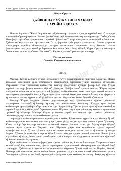

ҲХTotalitar tuzumni fosh etuvchi mashhur allegorik qissa.
Ushbu asar mantiqiy obrazlar orqali totalitar tuzumning fojiaviy illatlarini ochib beruvchi mashhur qissa hisoblanadi. Fermadagi hayvonlarning ozodlik va farovon hayot uchun kurashi orqali jamiyatdagi adolatsizliklar hajv qilinadi. Asar muallifning eng mashhur siyosiy-allegorik asarlaridan biridir.